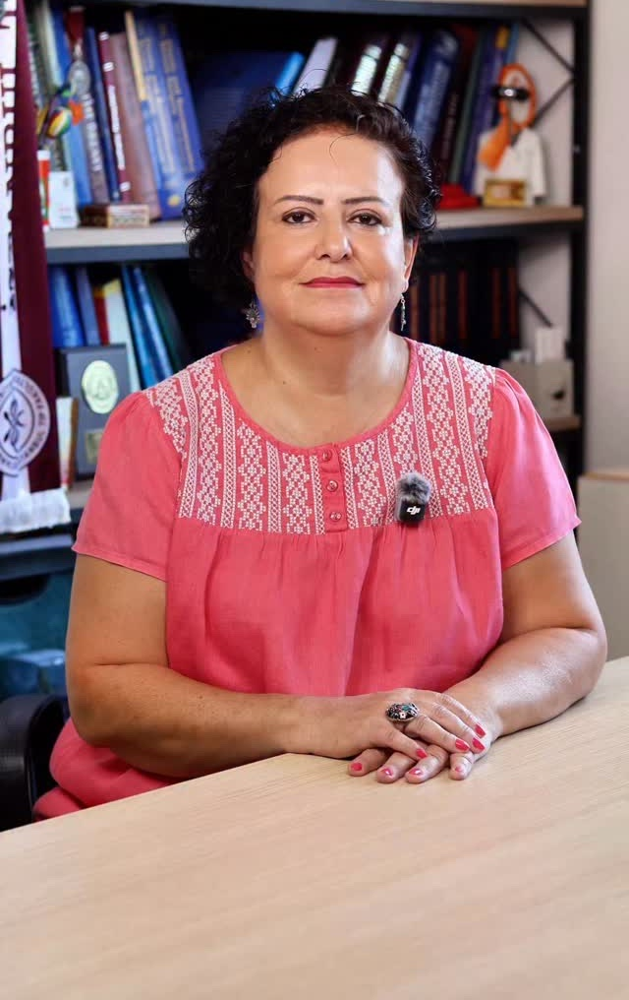
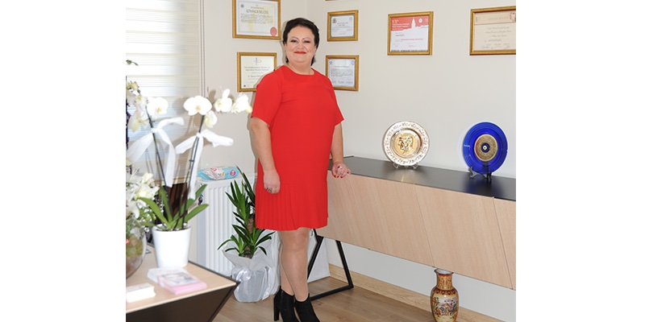

Yüz estetiği
Yüz hatlarıyla uyumlu, doğal sonuç hedefleyen cerrahi uygulamalar.
- Burun estetiği
- Göz kapağı estetiği
- Badem göz estetiği
- Yüz ve boyun germe
- Yanak ve çene estetiği
- Kepçe kulak estetiği
Op. Dr.
Doğallığı koruyan, kişiye özel planlanan estetik cerrahi ve medikal estetik.

Plastik, rekonstrüktif ve estetik cerrahi uzmanı. Eğitimi ve sonrasındaki çalışma hayatında çeşitli bilimsel çalışmalarda bulundu; yerli ve yabancı dergilerde yayımlanmış makaleleri ve kongre sunumları var.

Ameliyathanenin dışında müzik, özellikle perküsyon, dans ve seyahat.
Doğum yeri
İlk, orta ve lise eğitimi
Tıp doktoru unvanı
Plastik ve Rekonstrüktif Cerrahi uzmanlık eğitimine başlangıç
Uzmanlık eğitimi sırasında çeşitli hastanelerde çalışma
Ardından devlet ve özel hastanelerde görev
Başlıca ilgi alanları:
Yüz için çizim üzerindeki noktalara, vücut ve medikal estetik için sekmelere dokunun. Uygun yöntem muayene sonrasında, kişiye özel belirlenir.
Estetik cerrahi, medikal estetik ve saç ekimi ile tedavileri.
Yüz hatlarıyla uyumlu, doğal sonuç hedefleyen cerrahi uygulamalar.
Vücut oranlarını düzenlemeye yönelik ameliyatlar.
Ameliyatsız ya da minimal invaziv uygulamalar.
Instagram ve YouTube'dan; Türkçe ve İngilizce paylaşımlar.
Beklentiniz dinlenir, tıbbi geçmişiniz değerlendirilir.
İlgili bölge incelenir; size uygun seçenekler konuşulur.
Yöntem, hazırlık ve iyileşme süreci açıkça anlatılır.
Uygulama sonrası kontrollerle süreç izlenir.
Sitedeki bilgiler genel bilgilendirme amaçlıdır; tanı ve tedavi yerine geçmez. Uygulama sonuçları kişiden kişiye değişir; uygun yöntem muayene sonrasında hekim tarafından belirlenir.